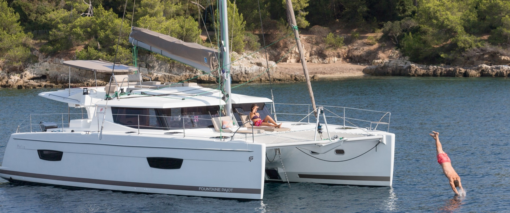
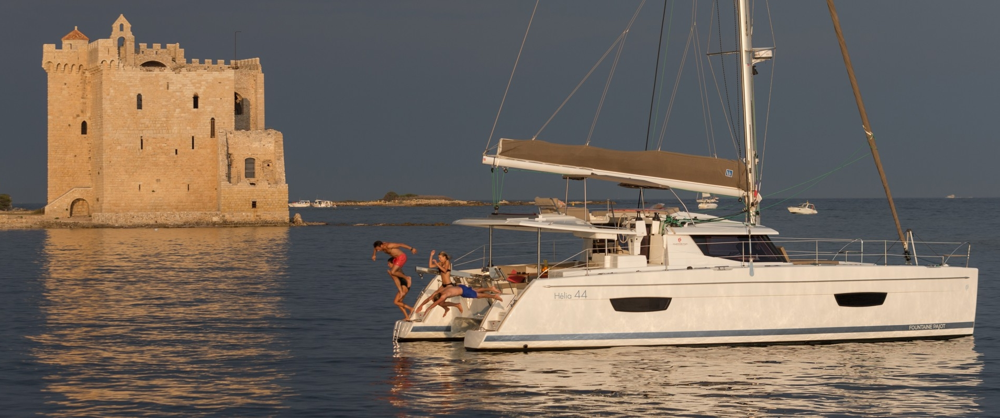

.jpg)


The Astréa 42 by Fountaine Pajot Sailing Catamarans is distinguished by its abundance of natural light, energetic lines, elegant living spaces and unparalleled comfort, while delivering sheer pleasure underway. A joy to share as a couple or with family and friends, this new catamaran promises every leg of your travels will be memorable.
The Astréa 42 demonstrates the boatyard’s commitment to innovation while preserving the classic identity of the Fountaine Pajot sailing catamarans’ range. She features all the elements that contributed to making our latest new boat, the Saona 47, an international success. Her inverted bow, the new signature mark of the range, gives the boat an elegant and dynamic line while offering incomparable interior space.
Enjoy the Sea to its Fullest
The Astréa 42 was conceived and designed to facilitate free-flowing movement throughout the boat, as well as linking the helm station with the outdoor relaxation and living spaces from coachroof to cockpit. The coachroof features a double seat at the helm station and a built-in sun lounger for enjoying idyllic days together.
The spacious cockpit, equipped with an optional integrated plancha grill, is the perfect place to relax and feel at one with the sea, enhanced by the Beach Club option that provides an embedded gangway flush with her line.
The incredibly comfortable lounge has been designed with expansive panoramic windows that bathe the interior in natural light. Her U-shaped galley transitions seamlessly with the cockpit courtesy of a vast sliding pocket door.
Available in two versions – Owner and Quatuor – with 12 bathroom layout options, the Astréa 42 has everything needed to fulfil your casual or extended cruising dreams. This is a catamaran that makes you feel proud to be a member of the Fountaine Pajot family.
The new cruising catamaran Hélia 44 Evolution invites you to cruise in harmony with the beauty of your surrounds. Designed for maximum living space and boasting beautiful natural light throughout its interior, this elegant and luxuriously appointed catamaran also delivers a dynamic performance at sea.
Immerse yourself in the panoramic 360° views made possible by the expansive saloon windows and integrated mast foot, marvel at the responsive handling in the spacious helmstation, or surrender your cares as you relax in the supremely cockpit or indulgent lounge deck.
This cruising catamaran now has new features including an extra cockpit bench seat, additional davits, and a luxurious Italian-style bathroom with separate toilet in the majestic Owner’s suite.
Worthy of our prestigious Flagship status, the Hélia 44 Evolution represents an entirely new level in cruising lifestyles.
ELEGANCE AND INDIVIDUALITY
Encompassing the finest signature features of the Fountaine Pajot shipyard, the Saona 47 exudes a striking aura with her distinctive design, strong lines and timeless elegance under sail or at anchor.
INCOMPARABLE SPACE
The Saona 47 boasts expansive living areas for enhanced cruising pleasure. The expansive cockpit is intelligently designed for entertaining and features an extended aft platform to easily facilitate a host of leisure activities. Immerse yourself in your spectacular surrounds on the foredeck’s huge sun lounger, or share in the cruising experience at the helmstation as you unwind on the exceptionally large 9m2 lounge deck.
The exquisitely crafted saloon is bathed in bright natural light, and her comprehensively equipped galley has an island bench and an abundance of storage for extended cruising. Available in two layouts, you can choose a 3-cabin Owner version featuring a decadent master suite that occupies an entire hull complete with a luxurious ensuite with Italian-style shower, with two generous guest cabins in the port hull that each enjoy their own exclusive ensuites. The Saona 47 is also available in a five-cabin charter version with private ensuites to the four double guest cabins as well as to the convenient crew quarters.PERFORMANCE AND AGILITY.
The Saona 47 cruising catamaran has been meticulously designed to offer intuitive responsiveness at the wheel and unparalleled performance in all conditions. Her optimised weight-to-volume ratio delivers exceptional balance and stability for an unforgettable sailing experience at any speed.
The Saona 47 – a dynamic yacht delivering cruising pleasures designed to be shared !
.jpg)
.jpg)